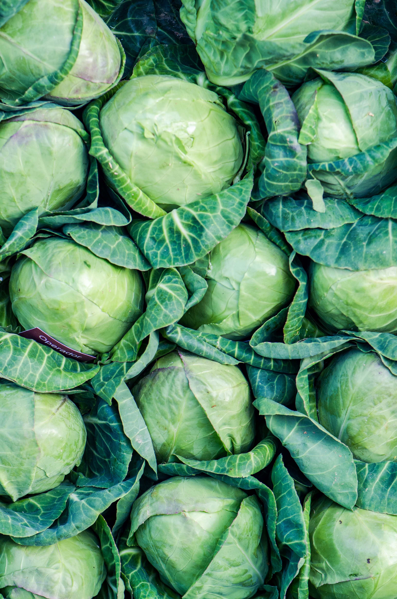

About Cabbage
Cabbage is a leafy green or purple vegetable known for its round or oval shape. It belongs to the Brassica family and is closely related to broccoli and cauliflower. Cabbage is a versatile vegetable used in various culinary dishes, such as coleslaw, sauerkraut, and stir-fries.
Steps to Grow Cabbage
- Choose a location with well-drained soil and full sunlight for cabbage cultivation.
- Start cabbage seeds indoors or directly sow them in the garden, depending on the growing season.
- Transplant seedlings with proper spacing, or thin directly sown seeds to ensure adequate room for growth.
- Water the cabbage regularly, ensuring consistent moisture, especially during dry periods.
- Apply a balanced fertilizer to the soil to support healthy cabbage development.
- Protect cabbage from pests such as cabbage worms and aphids through monitoring and appropriate measures.
- Harvest cabbage when the heads are firm and fully developed, typically 70 to 100 days after planting.
Extra Information
Cabbage is not only a delicious addition to meals but also a nutritious vegetable. It is rich in vitamins C and K and provides dietary fiber. Cabbage can be stored for an extended period in cool conditions, making it a valuable crop. Explore different cabbage varieties and cooking methods to enjoy the versatility of this cruciferous vegetable.